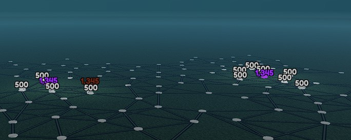

Beginnings: Old projects
5/13/2020
Nice to see you here this is my first log and ive got some cool stuff to show off! the first project I can really remember is in the beginning of 2020 in roblox and It wasnt the greatest thing, but I love my creation its so old and nostalgic.
This little game consisted of random stuff I had made. At first it was just a while true do loop spawning blocks between two vectors. the blue blocks are the only remnants left. It looked a lot cooler with the spammed black blocks.
I made a few other things like the somewhat working door in the background, a fireball spell, and the moving blackhole with random lasers shooting into it. I also made the aura at my feet... it doesnt stick to the player after a few minutes.
The next project I made was really difficult and I have no idea to this day how I completed it at that skill level. The task was to create a Randomly generated maze, but I did complete it and I learned SO MUCH. Sadly I dont have old photos of my very first attempt at a maze, but at least I dont have to look at a thousand lines of nested if statements at least 3-4 layers deep.
Heres an image of my maze:
Yeah. Thats a fire trap!
I made a lot of other projects after this and I couldnt have done any of them without the experience. I made a simulator game .. you just stand on buttons to get more cash lol. It did extreemely well though. ( Keep in mind that isnt Unique Visits )
I also made a ripoff of my favorite strategy game at the time ( another roblox game ). It worked really well, but I never completed it even though it was playable.
that.. might have Randomly generated too.. lol
This generation was mostly math instead of managing data from several arrays all at once, but I am still doing that here. My favorite part of this project was the A* pathing algorithm. The pathing was really hard to implement, but it was so worth the effort just like the maze was.
The idea behind this project is that you place drills and furnaces on a big area. The players goal is to make the drill dig up ores and drop them onto a conveyor. The final destination is the furnace to sell the ore. As the player you need to figure out where to place upgrades along the conveyor.
All I have right now is some math in the placement system and a test object, but im pretty happy with what I have right now. This is my most recent probject so maybe ill add some updates soon!